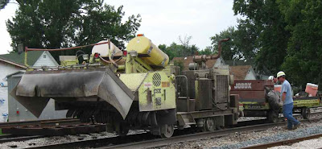
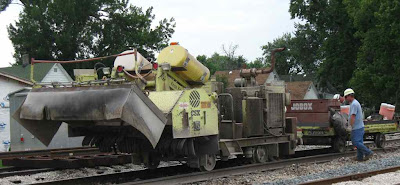

Michael Oakes will be leaving Rensselaer and SJC and moving to Columbus, IN where he will be teaching classes at IUPU-Columbus. He played many roles at SJC, and those who know how much he did wonder if others will step up to fill those roles. He was the mover behind the IACBE accreditation of the business program and is on the board of directors of IACBE. After Dave DeLauro left, he took over the administration of the course management software called Moodle. He was exceptionally active on committees and was serious about program evaluation. He pushed for curriculum innovation and encouraged both his colleagues and the administration to explore using more technology in education. Whenever there was a need to actually get results rather than merely spin wheels talking about things, it was good to have Michael Oakes involved.
He also has been active in the local community. He was on the board of Main Street Rensselaer and designed their visitrensselaer.com website. (He put the link to this blog there, which is how many people found this blog.) I was told that he did a lot of the work for Oktoberfest. I am sure people at Main Street Rensselaer will miss him as much as his friends at SJC, and will join in wishing him the best of luck in his future endeavors.

This blog reports events and interesting tidbits from Rensselaer, Indiana and the surrounding area.
Friday, July 31, 2009
Wild Tuesday at the farmers' market--the movie
As mentioned earlier, the Farmers' Market on Tuesday, July 28, 2009 was unexpectedly exciting. Here is the video version.
The band is the Newton Jasper Community Band.
The band is the Newton Jasper Community Band.
Thursday, July 30, 2009
School house bell and plaque
In front of the Rensselaer Middle School is a bell with a plaque.
The plaque reads:
Last year because of the Melville Street project, the race was run on a different course and here is a report of the race. This year they will be back to the standard Fit-for-Life Course. I plan to get my tee shirt and run the race. Maybe I will see you there.
The plaque reads:
This bell hung at the old middle school on the corner of Susan and Van Rensselaer Streets from about 1890 until recent times. This memorial is dedicated to all former students, and teachers who answered its call....and to all parents and community members who have made its ringing possible through taxation and devotion to the youth of this community.On Saturday about a hundred people will be gathering near the bell and plaque for the start and finish of the Jasper County Hospital Fit for Life 5K. Registration form and more info reached from here. Also, a community health fair from 8:00 am until 11:30 am at the Community Services Building also on Leopold.
Last year because of the Melville Street project, the race was run on a different course and here is a report of the race. This year they will be back to the standard Fit-for-Life Course. I plan to get my tee shirt and run the race. Maybe I will see you there.
Wednesday, July 29, 2009
Tie guys do Rensselaer
Tuesday was the day that the Tie Guys, or the CSX work crews, passed through Rensselaer, replacing the ties and tearing up the railroad crossings. Previous posts that mentioned the preparations are here and here, and mention of the crossings is here and here.
If you have been paying attention to the tracks, you could see the preparations for the past month or two. A few days ago even more stuff appeared.
After I noticed the pending road closing signs on Tuesday, I saw the work crew demolishing the Matheson Street crossing. I think the backhoe broke up the asphalt and removed the wooden ties that lie parallel to the track, and then the machine on the track plows and sweeps the debris away. The whole process was quite fast. An hour later they had finished a couple crossings.
It was not until the afternoon that I found the tie crew. I did not know what they were doing at first, so I had to watch the process for a while to figure it out. By the time I had it figured out, the front end was past Melville. The front end marked the ties to be removed, pulled the rail spikes, and slid the spike plate from under the tie. Below are the machines that did these tasks, taken before I realized what they were doing.
The first step of the process that I photographed was the removal of the old ties. This machine did that very quickly. It just grabbed a tie and pulled it out from under the track with its claw.After the old tie had been removed, another machine came along and placed new ties next to the rails. Actually there were two of these machines. In fact, there were duplicates of almost all of the machines. By having two or more machines doing tasks, they could go faster. I asked a worker how many miles they did a day, and he said about three, but it depended on how many ties they had to replace. I asked how the people who marked ties for removal knew which ties needed to be replaced, and he said that they could tell by looking at them. He remarked that they worked as a moving assembly line.Below is what the track looked like after the ties had been placed by the track. You can see where the missing ties are, and you can see the new ties positioned to take their places. It was rather amazing that these ties were placed by the machine above. Certainly the guys who worked these machines were very good at their jobs.
A machine that looked the same as the machines that were removing the ties came along, grabbed a tie, and jammed it under the track. I was impressed with how easily the machine did it.
The next step in the process was to clean the rock from the top of the ties, and a machine that had rotating "brushes" (I am not sure what they were made of) did that. The guys with this machine were also putting down the plates that fit between the rails and the ties.
It was followed by four of these little machines with umbrellas. The little machine would lift the track up a few inches, and the human would slide the spike plate into place. (The worker used the little pole to slide the plate.)In the picture below you can see several of the little umbrella machines. It was followed by a couple of machines. One seemed to be moving the ties just a little to get them lined up just right.
 The tracks now looked like what you see below. Notice that there the spike plates have been put under the rails, but in most of them, there are no spikes. The ones that have spikes are old ties that were not removed.
The tracks now looked like what you see below. Notice that there the spike plates have been put under the rails, but in most of them, there are no spikes. The ones that have spikes are old ties that were not removed.
 The machine shown below inserted the spikes. It took me a while to figure out what it was doing because the action was hidden behind a screen. It made a lot of noise, though, that sounded as if it was pounding something.Below you can see what how it put spikes in two of the four holes. There were at least two of these machines. The operator was only working one side of the track.
The machine shown below inserted the spikes. It took me a while to figure out what it was doing because the action was hidden behind a screen. It made a lot of noise, though, that sounded as if it was pounding something.Below you can see what how it put spikes in two of the four holes. There were at least two of these machines. The operator was only working one side of the track.
On Wednesday morning I saw the workers loading up the spike machine with a load of spikes. They lifted the spikes with an electromagnet.
The next to last machine had two guys following it and they seemed to be inspecting the work and fixing any problems. They had sledge hammers and would hammer something every few steps.The last machine in the parade, and it was about a mile behind the first machine, moved the stone from the sides closer to the rails. It was sort of a road grader, but for track bed, not roads.
Here are some of the discarded ties.
I have video clips of some of this, and I will try to edit them into something that makes some sense. I do not know when I will have that done, but do not expect them before next week.
If you have been paying attention to the tracks, you could see the preparations for the past month or two. A few days ago even more stuff appeared.
After I noticed the pending road closing signs on Tuesday, I saw the work crew demolishing the Matheson Street crossing. I think the backhoe broke up the asphalt and removed the wooden ties that lie parallel to the track, and then the machine on the track plows and sweeps the debris away. The whole process was quite fast. An hour later they had finished a couple crossings.
It was not until the afternoon that I found the tie crew. I did not know what they were doing at first, so I had to watch the process for a while to figure it out. By the time I had it figured out, the front end was past Melville. The front end marked the ties to be removed, pulled the rail spikes, and slid the spike plate from under the tie. Below are the machines that did these tasks, taken before I realized what they were doing.
The first step of the process that I photographed was the removal of the old ties. This machine did that very quickly. It just grabbed a tie and pulled it out from under the track with its claw.After the old tie had been removed, another machine came along and placed new ties next to the rails. Actually there were two of these machines. In fact, there were duplicates of almost all of the machines. By having two or more machines doing tasks, they could go faster. I asked a worker how many miles they did a day, and he said about three, but it depended on how many ties they had to replace. I asked how the people who marked ties for removal knew which ties needed to be replaced, and he said that they could tell by looking at them. He remarked that they worked as a moving assembly line.Below is what the track looked like after the ties had been placed by the track. You can see where the missing ties are, and you can see the new ties positioned to take their places. It was rather amazing that these ties were placed by the machine above. Certainly the guys who worked these machines were very good at their jobs.
A machine that looked the same as the machines that were removing the ties came along, grabbed a tie, and jammed it under the track. I was impressed with how easily the machine did it.
The next step in the process was to clean the rock from the top of the ties, and a machine that had rotating "brushes" (I am not sure what they were made of) did that. The guys with this machine were also putting down the plates that fit between the rails and the ties.
It was followed by four of these little machines with umbrellas. The little machine would lift the track up a few inches, and the human would slide the spike plate into place. (The worker used the little pole to slide the plate.)In the picture below you can see several of the little umbrella machines. It was followed by a couple of machines. One seemed to be moving the ties just a little to get them lined up just right.
The tracks now looked like what you see below. Notice that there the spike plates have been put under the rails, but in most of them, there are no spikes. The ones that have spikes are old ties that were not removed.The machine shown below inserted the spikes. It took me a while to figure out what it was doing because the action was hidden behind a screen. It made a lot of noise, though, that sounded as if it was pounding something.Below you can see what how it put spikes in two of the four holes. There were at least two of these machines. The operator was only working one side of the track.On Wednesday morning I saw the workers loading up the spike machine with a load of spikes. They lifted the spikes with an electromagnet.
The next to last machine had two guys following it and they seemed to be inspecting the work and fixing any problems. They had sledge hammers and would hammer something every few steps.The last machine in the parade, and it was about a mile behind the first machine, moved the stone from the sides closer to the rails. It was sort of a road grader, but for track bed, not roads.
Here are some of the discarded ties.
I have video clips of some of this, and I will try to edit them into something that makes some sense. I do not know when I will have that done, but do not expect them before next week.
Summer choral concert
On Saturday, July 25 the Rensselaer Program of Church Music and Liturgy presented its summer concert in the SJC chapel. This summer the program was focused on psalms put to music by a variety of composers. If you were not there, here is a 20-second sample.
***
***
The Rensselaer Program of Church Music and Liturgy is a summer program that leads to a masters degree. Founded by Fr. Lawrence Heiman, C.PP.S, the program will celebrate its 50th anniversary next year.
***
***
The Rensselaer Program of Church Music and Liturgy is a summer program that leads to a masters degree. Founded by Fr. Lawrence Heiman, C.PP.S, the program will celebrate its 50th anniversary next year.
Tuesday, July 28, 2009
Wild Tuesday
Today turned out to be an interesting day, full of adventures here in Rensselaer. My first hint that today might be interesting came when I was jogging north of town. I noticed that there were "Road Closed" signs pre-positioned on the roads with railroad crossings. However, it was not until I got out to the intersection on Airport Road that I found an intersection that had actually been ripped up.
It turned out that today was the day that the Tie Guys came to Rensselaer, that is, the railroad work crews came through town replacing ties on the railroad track. It was pretty impressive, but if you were driving, maybe less so. By the afternoon there were only three railroad crossings that were open in Rensselaer: McKinley or U.S 231, Melville, and Webster. (That means Mattheson, Jefferson, Cullin, Franklin, and Scott were closed.) I will have one or two posts about tie replacement in the next few days--I need more time to organize pictures and video.
Then this afternoon the Tuesday night Farmer's Market featured the Newton/Jasper Community band. There was a really good crowd, and there was also a pet parade, so a lot of dogs and some other animals were brought to the Court House Square.
 Alliance Bank was a sponsor, and their staff was giving away pop corn.
Alliance Bank was a sponsor, and their staff was giving away pop corn.
 The band started playing at 4:30. About 5:00 the rain started. Not a light sprinkle, but a heavy downpour. Someone opened the Court House, and people sought refuge there. The popcorn stand was abandoned. The band did not play on. It was a mess.
The band started playing at 4:30. About 5:00 the rain started. Not a light sprinkle, but a heavy downpour. Someone opened the Court House, and people sought refuge there. The popcorn stand was abandoned. The band did not play on. It was a mess.
Some people did not get inside quickly enough and got very wet.
I will try to post more about this also when I get time to put together text and video.
It turned out that today was the day that the Tie Guys came to Rensselaer, that is, the railroad work crews came through town replacing ties on the railroad track. It was pretty impressive, but if you were driving, maybe less so. By the afternoon there were only three railroad crossings that were open in Rensselaer: McKinley or U.S 231, Melville, and Webster. (That means Mattheson, Jefferson, Cullin, Franklin, and Scott were closed.) I will have one or two posts about tie replacement in the next few days--I need more time to organize pictures and video.
Then this afternoon the Tuesday night Farmer's Market featured the Newton/Jasper Community band. There was a really good crowd, and there was also a pet parade, so a lot of dogs and some other animals were brought to the Court House Square.
Alliance Bank was a sponsor, and their staff was giving away pop corn.The band started playing at 4:30. About 5:00 the rain started. Not a light sprinkle, but a heavy downpour. Someone opened the Court House, and people sought refuge there. The popcorn stand was abandoned. The band did not play on. It was a mess.Some people did not get inside quickly enough and got very wet.
I will try to post more about this also when I get time to put together text and video.
Update on emptiness I
In January and February I wrote about empty commercial buildings here, here, and here. It is time to take another look to see what has happened.
Way up north, the empty Dance Magic spot is now occupied by a pizza place, Papa Bills.
I have not heard anything about this place, and did not know that it was there until I stumbled on it and took these pictures.
I noticed that there was a new place across the highway, the Bargain Barn. I had seen some ads in the Rensselaer Republican for this place. It is open five days a week (closed Wednesdays and Sundays) and say they sell a little bit of everything. The also rent U-Haul trailers. I will have to check them out.
When I was last out that way, this building, which was once housed the studios of WRIN, had a business called "Rug Rats" selling carpeting. I know nothing about this business.
Coming south, we get to the jog in the road north of the Dodge dealership. Here an old gas station that had housed a beauty shop called Sharper Image Salon was for rent. It has been filled with Randall Dermatology and Med Spa.
The reception area looked rather Spartan.To the north, there is a lot with a small building for sale. The asking price is rather high--it must be for the location, not the building.
Across the highway, the old gas station remains empty. The business that used to be here was called Rail to Trail Tack & Feed. It is on the mail box, and I did not notice it when I did the post in January. A bit the the west is the large building that was once part of Northway, and its status seems unchanged.
Continuing south, there is a sign announcing a sort-of new business, Auto Works. When Heuring Ford went out of business, the mechanics who worked there stayed behind, continuing to fix cars. They probably had this name when I wrote about Prairie's Edge, but I did not remember it.
Crossing the railroad track, we find a new vacancy on the corner of McKinley and Vine. The Healthy Families office used to be here. They moved to the old Nesbitt Law building on Front Street, renting part of that space. The back half of this building on McKinley and Vine is still occupied by Broussard's accounting office.
(Update: I learned that this building has a long history. Early in the 20th century it was a barbershop with two barbers, one of them the grandfather of Charlie Roberts. Then it became a meat market, followed by a feed mill that had several owners--one was named Hunt. Next it was a shop selling fish and aquariums, Happy Daze Aquarium and Pets, and it was there I came to Rensselaer in 1974. Now it is an office building.)
A bit further south, Kirby Risk is in the process of moving to their new building on Clarke.
Across the street is a vacant building that has neither a for-sale or a for-rent sign. It was once Slaughter's Garage. When I first came to Rensselaer, I took my Chevy Nova there to be serviced and fixed. After a few years, Paul Slaughter closed up his shop and went to work for Charlie Robert's Chevrolet.
Where McKinley turns to the southeast, the old gas station across from St. Augustine's school remains for sale, and there is still a for rent sign in the big house that used to be Paul's Beauty Salon. Arriving downtown, the old Horton Building still has a for-rent sign. So does the former Whippersnap's office to the southeast and the building next to the Lafayette Bank and Trust to the southwest. Part of the Lafayette Bank and Trust complex will soon be vacant. However, there are three happier stories. The old Unfinished Furniture building is being renovated as Devon's Doghouse. The little nook by CI Insurance is now a store called Bags, Bangels, and Baskets.
And the empty slot in the front of the old Sears Building is now a hairdresser with the name Cutting Room Hair Styling Salon.
This is enough for one post. The rest will have to wait for a second installment.
Way up north, the empty Dance Magic spot is now occupied by a pizza place, Papa Bills.
I have not heard anything about this place, and did not know that it was there until I stumbled on it and took these pictures.
I noticed that there was a new place across the highway, the Bargain Barn. I had seen some ads in the Rensselaer Republican for this place. It is open five days a week (closed Wednesdays and Sundays) and say they sell a little bit of everything. The also rent U-Haul trailers. I will have to check them out.
When I was last out that way, this building, which was once housed the studios of WRIN, had a business called "Rug Rats" selling carpeting. I know nothing about this business.
Coming south, we get to the jog in the road north of the Dodge dealership. Here an old gas station that had housed a beauty shop called Sharper Image Salon was for rent. It has been filled with Randall Dermatology and Med Spa.
The reception area looked rather Spartan.To the north, there is a lot with a small building for sale. The asking price is rather high--it must be for the location, not the building.
Across the highway, the old gas station remains empty. The business that used to be here was called Rail to Trail Tack & Feed. It is on the mail box, and I did not notice it when I did the post in January. A bit the the west is the large building that was once part of Northway, and its status seems unchanged.
Continuing south, there is a sign announcing a sort-of new business, Auto Works. When Heuring Ford went out of business, the mechanics who worked there stayed behind, continuing to fix cars. They probably had this name when I wrote about Prairie's Edge, but I did not remember it.
Crossing the railroad track, we find a new vacancy on the corner of McKinley and Vine. The Healthy Families office used to be here. They moved to the old Nesbitt Law building on Front Street, renting part of that space. The back half of this building on McKinley and Vine is still occupied by Broussard's accounting office.
(Update: I learned that this building has a long history. Early in the 20th century it was a barbershop with two barbers, one of them the grandfather of Charlie Roberts. Then it became a meat market, followed by a feed mill that had several owners--one was named Hunt. Next it was a shop selling fish and aquariums, Happy Daze Aquarium and Pets, and it was there I came to Rensselaer in 1974. Now it is an office building.)
A bit further south, Kirby Risk is in the process of moving to their new building on Clarke.
Across the street is a vacant building that has neither a for-sale or a for-rent sign. It was once Slaughter's Garage. When I first came to Rensselaer, I took my Chevy Nova there to be serviced and fixed. After a few years, Paul Slaughter closed up his shop and went to work for Charlie Robert's Chevrolet.
Where McKinley turns to the southeast, the old gas station across from St. Augustine's school remains for sale, and there is still a for rent sign in the big house that used to be Paul's Beauty Salon. Arriving downtown, the old Horton Building still has a for-rent sign. So does the former Whippersnap's office to the southeast and the building next to the Lafayette Bank and Trust to the southwest. Part of the Lafayette Bank and Trust complex will soon be vacant. However, there are three happier stories. The old Unfinished Furniture building is being renovated as Devon's Doghouse. The little nook by CI Insurance is now a store called Bags, Bangels, and Baskets.
And the empty slot in the front of the old Sears Building is now a hairdresser with the name Cutting Room Hair Styling Salon.
This is enough for one post. The rest will have to wait for a second installment.
Monday, July 27, 2009
A walk in the woods
On Saturday, July 25, Kevin Tungesvick Vice President of the Indiana Native Plant and Wildflower Society (INPAWS) led a tour at the Fisher Oaks Savanna Preserve to highlight prairie restoration efforts. A group of about a dozen people showed up, most from the Indianapolis area. The walk started from the parking area near the old house on the last sand dune. To the south the black-soil prairie stretched as far as the eye could see, most planted in corn and soybeans. The tour leader said it is rare that land this fertile is restored to prairie. Usually restorations are of disturbed land that has poor soil.
We walked back into the woods, past the places we were burning brush last spring. There were a lot of pokeweed, sassafras shoots, and blackberry canes along this part of the trail, but no blackberry fruit. The area had been burned, destroying the second-year blackberry canes that would be bearing fruit this year. The purpose of the burning and the destruction of cherry, mulberry, and sassafras trees was to restore an oak savanna habitat, one that would let red-headed woodpeckers thrive. It is interesting that without fire, both prairie and oak savanna, and pretty much all of Jasper County if cultivation stopped, would rather quickly become dense woods. The Indians used fire to manage habitat for food long before European settlers arrived, so the early settlers did not see a landscape that would have existed without man's interference.
 We walked through the woods to a small bit of restored prairie north of the house. Along the border of the woods and the prairie the blackberries did have fruit, and it was tasty. Next year there should be a lot of blackberries along this trail.
We walked through the woods to a small bit of restored prairie north of the house. Along the border of the woods and the prairie the blackberries did have fruit, and it was tasty. Next year there should be a lot of blackberries along this trail.
 In terms of being able to identify plants, I was out of my league in this group. It was not just the leader who knew a lot, but most of the participants also knew a lot. They kept tossing the Latin names for plants back and forth, discussing which species of the genus it was. I still am trying to learn the easy plants, like the Rattle Snake Master, a native prairie plant that is sometimes grown in flower gardens.
In terms of being able to identify plants, I was out of my league in this group. It was not just the leader who knew a lot, but most of the participants also knew a lot. They kept tossing the Latin names for plants back and forth, discussing which species of the genus it was. I still am trying to learn the easy plants, like the Rattle Snake Master, a native prairie plant that is sometimes grown in flower gardens.
 There was big patch of partridge peas near the woods. This was not one of the plants that they had restored, but had crept in from the woods and they were happy to see it. It is a native prairie plant that is an important food source for quail.
There was big patch of partridge peas near the woods. This was not one of the plants that they had restored, but had crept in from the woods and they were happy to see it. It is a native prairie plant that is an important food source for quail.
We went back to the parking area to get ready for an excursion into the wet and muddy prairie area south of the house. The field was full of flowers, but unfortunately, I had another commitment for the day, so I left and missed this part of the walk.
Driving along I-65, I noticed that there were a lot of wind turbines north west of Brookston. Checking the Internet, that project is the Meadow Lake Wind Farm. It will ultimately have about 600 towers, though only 121 are being installed in the first phase of the project. To the west of I-65 I could see two other wind farms. My guess is that they were the Fowler Ridge Wind Farm and the Hoosier Wind Project. I think the Benton County Wind Farm near Earl Park is too far west to be visible from I-65.
If I got down in the wind corridor more often, I would be posting frequently about the wind farms--it is a big story for the region. (Tip to the Rensselaer Republican--you should do more on this topic.) However, my limited travel does not often take me that way.
We walked back into the woods, past the places we were burning brush last spring. There were a lot of pokeweed, sassafras shoots, and blackberry canes along this part of the trail, but no blackberry fruit. The area had been burned, destroying the second-year blackberry canes that would be bearing fruit this year. The purpose of the burning and the destruction of cherry, mulberry, and sassafras trees was to restore an oak savanna habitat, one that would let red-headed woodpeckers thrive. It is interesting that without fire, both prairie and oak savanna, and pretty much all of Jasper County if cultivation stopped, would rather quickly become dense woods. The Indians used fire to manage habitat for food long before European settlers arrived, so the early settlers did not see a landscape that would have existed without man's interference.
We walked through the woods to a small bit of restored prairie north of the house. Along the border of the woods and the prairie the blackberries did have fruit, and it was tasty. Next year there should be a lot of blackberries along this trail.In terms of being able to identify plants, I was out of my league in this group. It was not just the leader who knew a lot, but most of the participants also knew a lot. They kept tossing the Latin names for plants back and forth, discussing which species of the genus it was. I still am trying to learn the easy plants, like the Rattle Snake Master, a native prairie plant that is sometimes grown in flower gardens.There was big patch of partridge peas near the woods. This was not one of the plants that they had restored, but had crept in from the woods and they were happy to see it. It is a native prairie plant that is an important food source for quail.We went back to the parking area to get ready for an excursion into the wet and muddy prairie area south of the house. The field was full of flowers, but unfortunately, I had another commitment for the day, so I left and missed this part of the walk.
Driving along I-65, I noticed that there were a lot of wind turbines north west of Brookston. Checking the Internet, that project is the Meadow Lake Wind Farm. It will ultimately have about 600 towers, though only 121 are being installed in the first phase of the project. To the west of I-65 I could see two other wind farms. My guess is that they were the Fowler Ridge Wind Farm and the Hoosier Wind Project. I think the Benton County Wind Farm near Earl Park is too far west to be visible from I-65.
If I got down in the wind corridor more often, I would be posting frequently about the wind farms--it is a big story for the region. (Tip to the Rensselaer Republican--you should do more on this topic.) However, my limited travel does not often take me that way.
Sunday, July 26, 2009
Almost a church
(I thought it would be interesting to use Sundays to focus on Rensselaer's churches and to see how many Sundays I can go before I run out of material. Indiana is richly endowed with religious denominations, with influences from North and South, East and West. This is part of that series of posts.)
North of town on U.S. 231 is a building that was intended to become a church, but has not. The sign in front said "Crown of Glory Worship Center." However, construction had stopped amid some legal issues that were reported in the Rensselaer Republican, but the article no longer available on the Internet. (I hope the link does not offend anyone--it was the only one I could find.)
The building had been used as an apartment building for many years, and before that it had been an office building, called, I believe, the Enterprise Building. It looked like a use as a church would have been an improvement on what had been there.
North of town on U.S. 231 is a building that was intended to become a church, but has not. The sign in front said "Crown of Glory Worship Center." However, construction had stopped amid some legal issues that were reported in the Rensselaer Republican, but the article no longer available on the Internet. (I hope the link does not offend anyone--it was the only one I could find.)
The building had been used as an apartment building for many years, and before that it had been an office building, called, I believe, the Enterprise Building. It looked like a use as a church would have been an improvement on what had been there.
Saturday, July 25, 2009
Cemetery Plaques
The newest part of Weston Cemetery has a growing number of plaques. Near the entrance are two benches by a small tree.
The plaque between the benches says, "Christian Men's Fellowship."
At the entrance there is a small plaque near the flag pole that reads, "Another Lion's Project." I found a similar plaque near the basketball court in Columbia Park, which is shown below. I wonder how many others are scattered around Rensselaer.On the west side of the cemetery is a more traditional plaque between a bench and a small tree.
It reads, "The Jasper County Historical Society dedicates this tree In the year 2006 in the memory of our following members: William Grow, Russell Hadley Betty and George Johnson Anna Marlin and Helen Rhodes."
In the second week of July a small backhoe was digging across the road from the Historical Society plaque. building a foundation for another bench.
This one was put in by the Moose. It looks a lot like a tombstone, as if the Rensselaer Moose Family Center is buried here. On the other side it says, "Women of the Moose."The backhoe was also busy around the veteran's memorial that is in this part of the cemetery. Again, it was preparing foundations for benches. The benches had previously been there, but now they have solid footings. This project was sponsored by the American Legion. (I hope I got that right--if I messed up, tell me in the comments.) Update: I messed up. The benches were sponsored by the VFW and they clearly state this on the sides facing the central monument. The central monument was sponsored by the American Legion.
Below you can see them finished, on concrete pads. If you look at the video from Memorial Day, you can see that then they were just sitting on the grass.
 There are a number of other benches without plaques. I suspect in time they will acquire plaques. It also seems another bench may be placed between the historical society tree and the Moose Bench.
There are a number of other benches without plaques. I suspect in time they will acquire plaques. It also seems another bench may be placed between the historical society tree and the Moose Bench.
The plaque between the benches says, "Christian Men's Fellowship."
At the entrance there is a small plaque near the flag pole that reads, "Another Lion's Project." I found a similar plaque near the basketball court in Columbia Park, which is shown below. I wonder how many others are scattered around Rensselaer.On the west side of the cemetery is a more traditional plaque between a bench and a small tree.
It reads, "The Jasper County Historical Society dedicates this tree In the year 2006 in the memory of our following members: William Grow, Russell Hadley Betty and George Johnson Anna Marlin and Helen Rhodes."
In the second week of July a small backhoe was digging across the road from the Historical Society plaque. building a foundation for another bench.
This one was put in by the Moose. It looks a lot like a tombstone, as if the Rensselaer Moose Family Center is buried here. On the other side it says, "Women of the Moose."The backhoe was also busy around the veteran's memorial that is in this part of the cemetery. Again, it was preparing foundations for benches. The benches had previously been there, but now they have solid footings. This project was sponsored by the American Legion. (I hope I got that right--if I messed up, tell me in the comments.) Update: I messed up. The benches were sponsored by the VFW and they clearly state this on the sides facing the central monument. The central monument was sponsored by the American Legion.
Below you can see them finished, on concrete pads. If you look at the video from Memorial Day, you can see that then they were just sitting on the grass.
There are a number of other benches without plaques. I suspect in time they will acquire plaques. It also seems another bench may be placed between the historical society tree and the Moose Bench.
Subscribe to:
Posts (Atom)